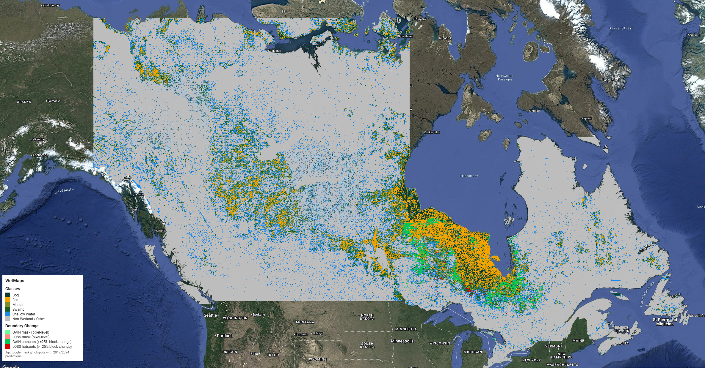
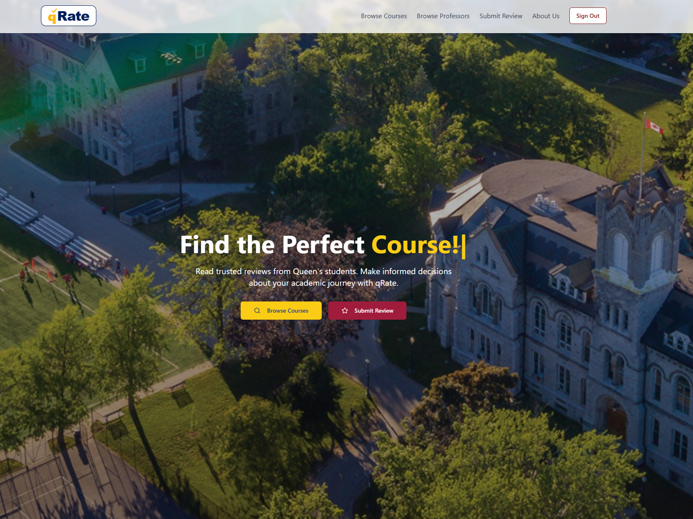
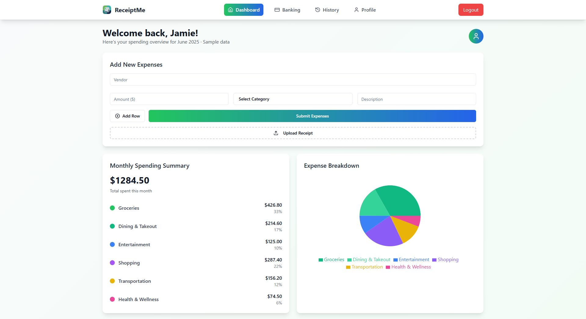
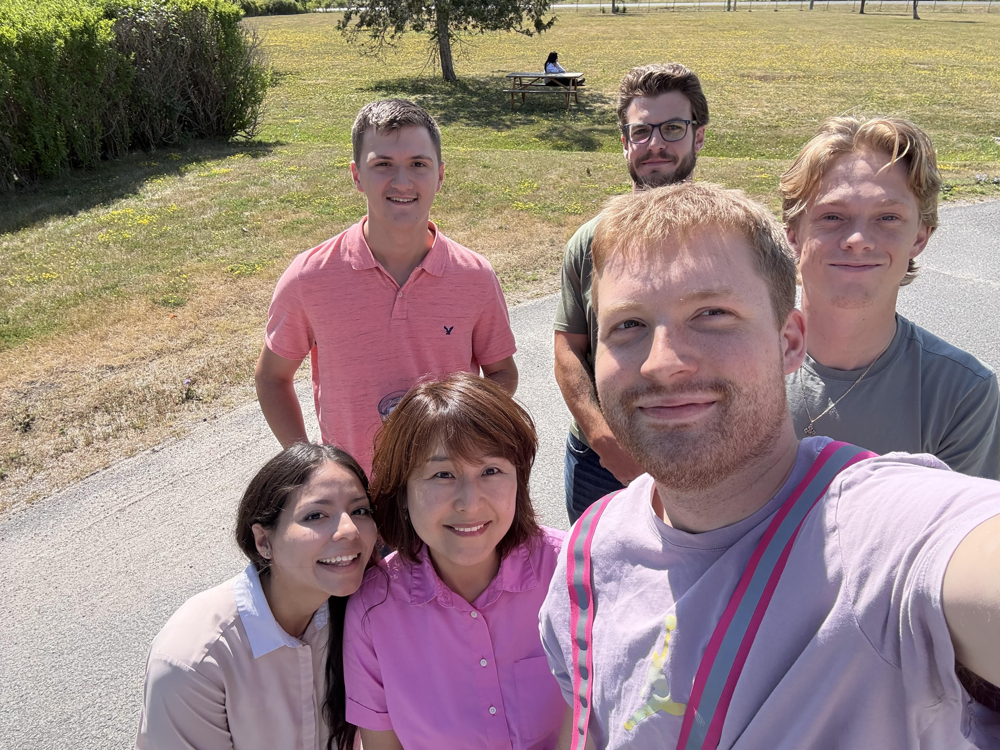
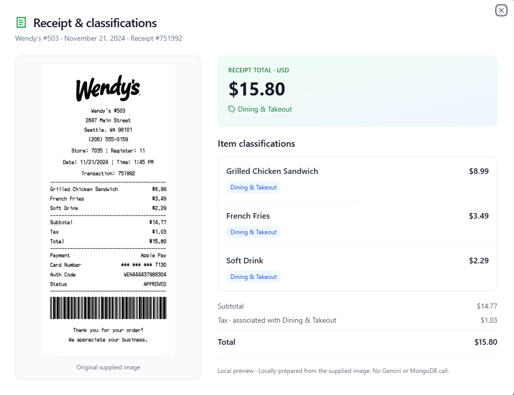
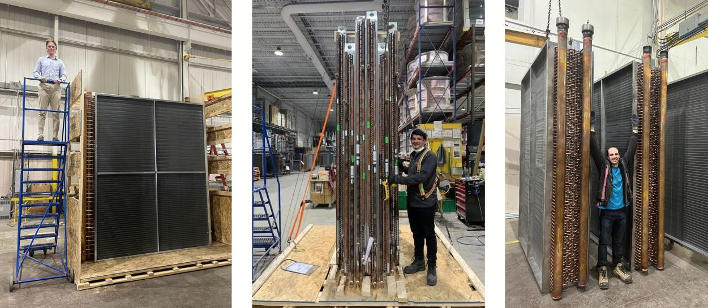

Computer Engineering · Queen’s University ’26
Take a look at my
projects and experience.
I’m James, a Computer Engineering graduate interested in how things work—and how to make them work better.
Based in Calgary. Open to graduate roles in Canada and the UK.
Let’s talkMy work

Capstone projectWetMaps
Mapping Canada’s wetlands using satellite data.
Explore project
Web applicationqRate
A platform for students to find and share course and professor reviews.
Explore project
Web applicationReceiptMe
Turning everyday receipts into personalised spending insights.
Explore project
Engineering internshipDirect Coil
A year bringing custom heat-transfer equipment from drawings to production.
Explore experienceFrom satellite data to the manufacturing floor.
Swipe to explore →Four projects. Different ways of solving problems.WetMaps

Click an image to view it full-size.
Mapping Canada’s wetlands using satellite data.
For our four-person engineering capstone at Queen’s, we built a tool that identifies wetlands and shows them on a map. The aim was to help update wetland maps without having to survey every area by hand.
How it works
We used existing wetland maps as examples to teach an AI model what different wetland types look like in satellite data. It then predicted where bogs, fens, marshes, swamps, and shallow water were located in other areas.
Our first version produced patchy maps. Looking at the surrounding area, rather than each point on its own, helped create clearer boundaries. Users could explore the finished maps in Google Earth Engine, an online mapping tool.
My contribution
- Built the cloud-based process for handling large satellite files and turning the computer’s predictions into maps.
- Automated tests so we could repeat experiments consistently.
- Checked how reliably the system worked with different data and across parts of Canada.
What we found
The system averaged 87% accuracy across five rounds of testing, above our 80% target.
We also compared maps from 2017 and 2024 to highlight where Ontario’s wetlands appeared to grow or shrink. Some differences may come from changes in the satellite data rather than real changes on the ground, so these results need further checking.
Tools
Python, TensorFlow/Keras, Scikit-learn, Google Earth Engine, Google Cloud Storage, Google Colab, Docker.
qRate
A place for students to share and explore course and professor reviews.
I built and deployed a review platform using MongoDB, Express, React, and Node.js, with hosting on Microsoft Azure.
My contribution
- Developed the application for students to publish and browse ratings.
- Set up GitHub Actions to automate testing and deployment.
- Implemented JWT authentication, input validation, and profanity filters.
Tools
React, Express, Node.js, MongoDB, Microsoft Azure, GitHub Actions.
ReceiptMe

Click an image to view it full-size.
An expense tracker with receipt uploads and personalised spending summaries.
ReceiptMe lets users track expenses and explore their spending through an application built with MongoDB, Express, React, and Node.js.
My contribution
- Built receipt-upload and expense-tracking features.
- Integrated the Gemini API to produce personalised 30-day summaries from users’ spending data.
- Implemented Google OAuth and spending comparisons by age, location, or income.
Tools
React, Express, Node.js, MongoDB, Gemini API, Google OAuth.
Direct Coil

Click an image to view it full-size.
Engineering design experience on the manufacturing floor.
During my year at Direct Coil in Kingston, Ontario, I worked on drawings for heat-transfer equipment, including fluid coolers and condensers. Rotating through departments helped me understand the products, manufacturing processes, and practical constraints behind each design.
Highly customized jobs with tight deadlines were a constant challenge. I kept in close contact with customers and the manufacturing department to work through design questions, communicate changes, and keep everyone clear on what each job needed.
My work
- Created 2D and 3D parts drawings in AutoCAD.
- Worked with manufacturing teams to resolve production challenges and improve manufacturability.
- Communicated with customers to resolve design conflicts and balance performance with practicality.
- Contributed to revisions of design standards and managed time-sensitive jobs.
Areas of experience
AutoCAD, heat-transfer equipment, manufacturing processes, design standards, customer communication.